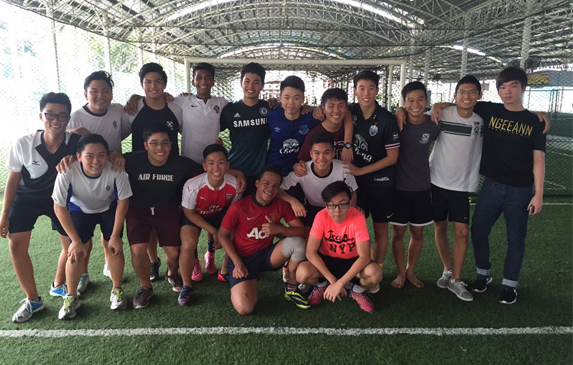

Some of my Secondary 2 classmates and I after a game of futsal.
I love football. I got into football when I was in Primary 4, as my friends were all playing and watching football. However, I did not really follow any single team. I was just playing both the game FIFA and in real life with my friends.
In Secondary 1 & 2, my classmates were also very much into football. We played every single day during recess and we had lots of fun. There, I trained to be a defender and a goalkeeper - primarily being a defender.
When I changed classes in Secondary 3, my classmates were similar - however we only played during our Physical Education classes instead of playing everyday during recess. I trained and developed as a goalkeeper throughout Secondary 3 & 4, and my classmates were really supportive and rated my ability.
I became a fan of Arsenal F.C. when I was Secondary 4, as I loved the style of their game and the players they had. I've been watching their matches whenever I can. I find myself being very passionate about the club and hope they win the premier league this season!
MEDIA
A picture of my fellow publications subcommittee and I.
I love anything to do with media - be it physical things like filming, directing and photography to things like editing, Photoshop, AfterEffects. It is something I have found myself loving to do - which made me actually want to study for a Diploma in Mass Communication in Ngee Ann Polytechnic. Unfortunately, I was not accepted in.
It is probably also another reason why I joined Publications in DMIT Club - because we are mainly doing those things. I am very thankful to be in Publications as it challenged me to learn many things quickly and I am glad - because I realised how much I have learnt over the few months.
I also took some filming lessons and found it to be very exciting! I wish that Singapore had a big hollywood-like film industry as I would probably be doing films instead. One of my favourite directors is Christopher Nolan. His films are always so amazing and I could watch any of his films over and over again.
But then again, this is just a hobby of mine. I still like doing Infocomm Security and will pursue it further, but I do wish that I would have time for my hobbies!